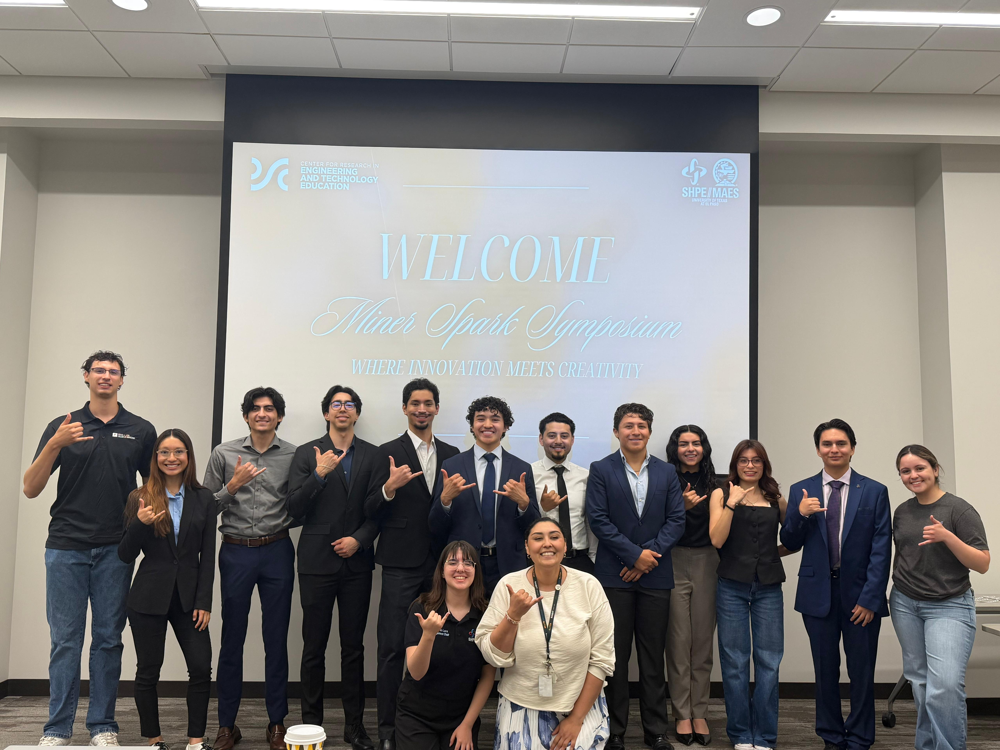
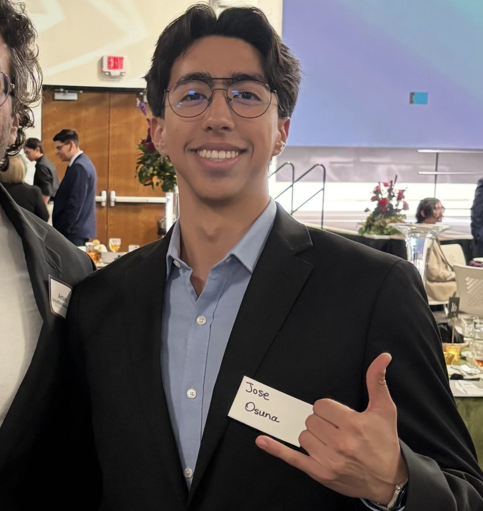

Welcome to Miner Spark
Where Innovation Meets Creativity
About Us
Miner Spark is a student-led initiative at The University of Texas at El Paso dedicated
to helping undergraduate students discover their passion for research. We believe that every
student has the potential to make meaningful contributions to innovation, regardless of their
background or previous experience.
Our program connects students with faculty mentors, research opportunities, and professional
development resources that prepare them for graduate school, industry careers, and leadership roles.
Through mentorship, hands-on projects, workshops, and a supportive community, participants gain the
confidence and skills needed to succeed beyond the classroom.
At Miner Spark, we recognize that beginning a research journey can be intimidating. That's why we focus
on making research more accessible, creating an environment where curiosity is encouraged, questions are
welcomed, and learning happens through collaboration.
Cohorts
Mission
To ignite students' potential by providing the tools, skills, and mentorship that empower them to explore research, pursue graduate education, and become future innovators.
Vision
Help students find their spark through research and empower them to choose the path that best fits their aspirations, whether in academia or industry.
Jose Osuna
Hi, I'm Jose Osuna, a Mechanical Engineering student who participated in Miner Spark in Spring 2026. Through the program, my team and I designed and tested an ESP32-based mesh-network relay system for search-and-rescue robots. Miner Spark helped me develop research, teamwork, and presentation skills while connecting with mentors and fellow students. I encourage you to take advantage of this opportunity; it’s a great way to grow as an engineer and gain valuable hands-on experience.

Contact Us!
rglara2@miners.utep.edu